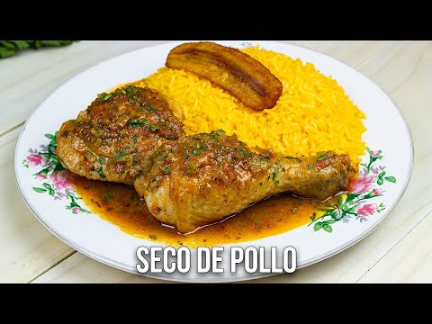

Receta: Seco de pollo

Descripción
Es un plato tradicional ecuatoriano,
un guiso espeso y aromático preparado con pollo,
culantro licuado, cebolla, ajo y especias.
Se caracteriza por su sabor ligeramente
ácido por el uso de naranjilla o cerveza,
y se sirve con arroz, papa o yuca.
Se considera un plato emblemático por su historia, sabor y
versatilidad, y es popular como remedio para la resaca.
- 4 presas de pollo
- 1 cebolla grande picada
- cebolla colorada
- albacora
- cilantro
- 1 taza de culantro licuado (culantro + un poco de agua)
Pasos
- Cocinar el pollo
- Cocinar el refrito
- Cocinar la albacora
- cortar la cebolla
- hacer el chifle
- Servir todo
HOME